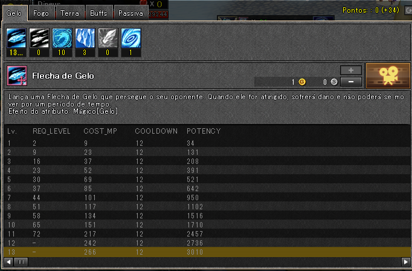
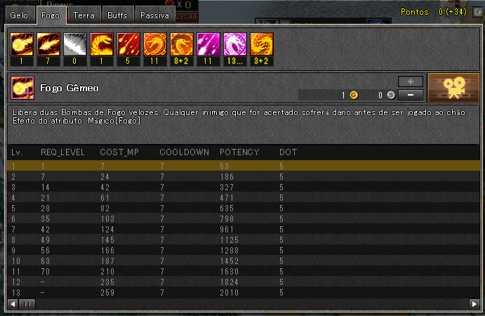
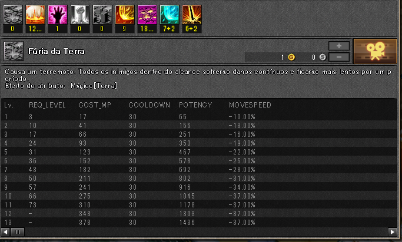
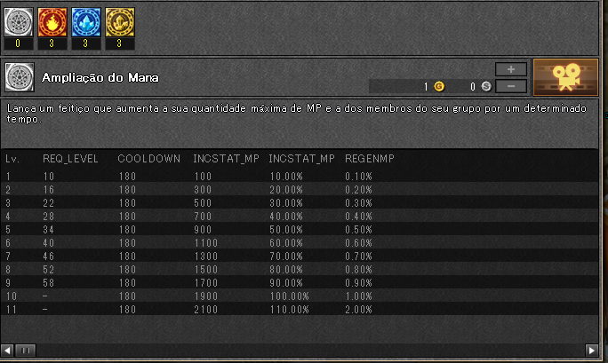
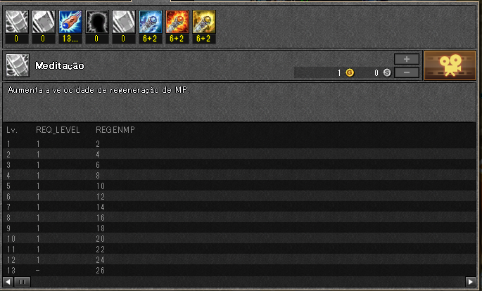

Historia do mago
Um Mago Real do Reino Lunia, ele é seguido por Eir em sua missão para investigar as forças iminentes do mal.
Sendo normalmente calmo, frio e controlado, ele frequentemente assume o papel de liderança.
Como discípulo do mais alto Mago do Continente Rodésia, ele é bem versado em uma ampla gama de magia elemental.
Tipo de classe
Como a classe de mago típica de qualquer RPG, ele é melhor para "jogadores nuker".
Sua alta produção de dano e rápida velocidade de recuperação de mana compensam sua falta de saúde e defesa física.
Um personagem popularmente escolhido, seu papel em grupos é derrubar o inimigo rápido e forte.
Ele tem uma série de magias AoE que podem causar dano a um grande número de inimigos de uma só vez.
Com magias de longo alcance adicionais que podem causar uma quantidade bastante excessiva de dano quando usadas apropriadamente.
Tipo de arma
Cajado

Prós de dainn
Ataques de longo alcance
Ataques de Homing e Magias AoE (Área de Efeitos).
Combos de cadeia longa.
Habilidades moderadamente poderosas.
Efeitos em certas habilidades.
Recuperar MP sem poções de MP.
Contras do dainn
Alto consumo de MP
Saúde mais baixa do que o normal em relação a outras classes.
Dano mínimo de combate corpo a corpo.
Build dano e imune Dainn
Habilidades de Gelo

Habilidades de fogo

Habilidades de terra

Buffs

Passivas
